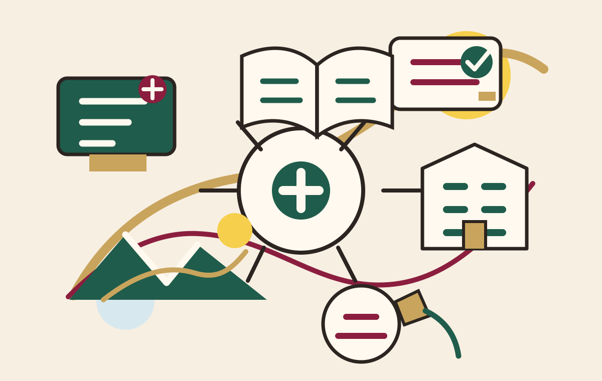

餐旅系教學系列
將課程、計劃書、PPT 與案例網站整理為可連結的教學資源。
Yeh Chia-Shan Teaching Portal
這是一個整合教學、創業、旅館管理、登山日誌與餐旅顧問經驗的網站。知識不是只被保存，而是被帶到課堂、現場、山路與實作案例裡。

Teaching Field
弘光科技大學餐旅系教學素材，以系列方式整理，讓學生可以從課程計劃、案例網站到簡報瀏覽循序進入。
| 系列 | 內容定位 | 教學計劃書 | PPT 瀏覽 | 範例連結 |
|---|---|---|---|---|
| 弘光科技大學餐旅系創業系列 | 微型餐飲創業、品牌故事、網站行銷、會員互動與 GitHub Pages 教學案例。 | 觀看教學計劃書 | 網頁瀏覽，不提供下載 | La Neige 法式雪冰室 |
| 旅館管理系列 | 房務、櫃檯、收益管理、服務流程與顧客體驗設計。 | 觀看教學計劃書 | 網頁瀏覽，不提供下載 | 建置中 |